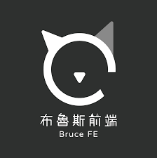
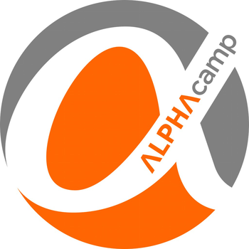
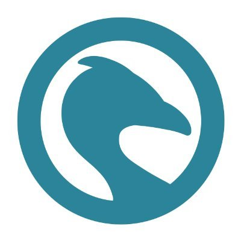

為了成為軟體工程師，曾做過什麼努力？若有具體專案作品請分享給我們。
w3Schools
w3Schools是我學前端最初接觸的一個學習平台。資料庫幾乎是涵蓋所有HTML、CSS、JS和Python等的語法。
除了每種語法的說明外，還有簡易題目可以操作，獲取個人的分數，在初期常常忘了語法怎麼使用時，就會到w3school或MDN查詢，相當實用的工具書。
學習狀況如下:
- HTML: 54%
- CSS: 59%
- JavaScript: 44%
- Point: 497
Udemy
在接觸前端設計之前，試著到PTT爬文參考一些自學前端的前輩們的文章，都推薦可以去Udemy買課程，因為在特價期間優惠的價格只要幾百塊，很適合初學者們試水溫。
購買的課程有:
- The Complete Web Developer in 2023: Zero to Mastery
- 2022網頁開發全攻略(HTML, CSS, JavaScript, React, SQL, Node, more)
布魯斯前端
除了使用Udemy平台學習以外，也有到YouTube觀看布魯斯前端的【前端速成 JavaScript JS 快速入門】影片，布魯斯講的內容是JS基礎觀念，介紹JS的核心語法後有影片可以跟著實作一個備忘錄小App
六角學院
在看完Udemy的課程後，因為都是英文講解，怕漏掉重要基礎觀念，所以有考慮參加較大型課程的平台，才加入了六角學院。
六角學院在每個章節都講得非常詳細，且也有定期需繳交的作業，由助教做批改回饋訊息，比之前學習的平台上內容更為完整。
購買的課程如下:
- 使用 HTML、CSS 開發一個網站
- JavaScript 必修篇 - 前端修練全攻略
- JavaScript 核心篇
- 一變應萬變的響應式網頁設計
- 使用 jQuery 打造互動性網頁動畫效果
- Bootstrap 5 網頁切版整合術
- Vue 3 實戰影音課程
- 使用 jQuery 打造互動性網頁動畫效果
Alphacamp

雖上完六角學院的課程，但是對於專案製作上還是會常常遇到撞牆的時期，JS的語法使用、網頁的排版等，使用上總是覺得自己仍對前端技術不是很熟悉。
後來無意間看到AC有優惠，就購買學期一的內容試讀，試上之後發現他們的課程內容非常完整，有影片及文字的交互呈現下，讓學習者可以更沉浸在學習前端技術。
AC與六角一樣有助教批改作業機制，只是AC的作業比六角的來的更多且程度稍微在難一些些，此外線上直播實作的課程也很實用。
購買的課程如下:
- 學期 1：程式設計入門: Completed
- 學期 2-1：JavaScript 前端開發: Completed
- 學期 2-2：軟體開發實務入門: Completed
- 學期 2-3：前端開發實務(Cohort Start Date：2023-03-13) : 60%
- 學期 3：軟體工程師養成 - 前端課程(Cohort Start Date：2023-04-24)
paiza

曾經在網路上看到有一款遊戲是跟程式語言有關的遊戲(日式王道RPG)エンジニア騎士とクエリの魔女。它是一款可藉由解題破關獲得裝備，看了覺得很有興趣；經查詢後，才知道是paiza這家公司所製作的遊戲，同時它也是一個程式語言的學習平台，大多的初階課程都是免費觀看。
除了學習課程以外，他們還有提供學習者與IT公司媒合的服務，他們會看你在他們平台上的使用表現再決定是否將你的履歷主動推薦給IT公司。
後期我比較常用的是スキルチェック這項服務，它類似Leetcode提供學習者解題，與Leetcode稍微不一樣的是嚴禁使用者將解題的code內容PO在網路上，
所以在網路上比較難看見其他人的解題分享，為的是維護他們替IT公司在尋找或媒合人才時，可以參考學習者拿到的分數且比較有可信度。
個人目前在C級rank裡面解了19道題目，目前仍持續努力中。下圖是能力分級表，請參考。